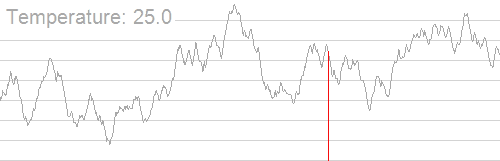

最小圆覆盖问题
给出 $N$ 个点，让你画一个最小的包含所有点的圆。输出圆心、半径。
数据范围 $N\leq 10^5$
模板提交链接：[Luogu 1742] [BZOJ 1337]
解法
一般有两种做法：随机增量法与模拟退火法。随机增量法是一种确定性算法，随机意义下均摊复杂度 $O(n)$ ，而且可以达到很高的精度（可达到 $10^{-10}$ 量级）；而模拟退火法是启发式算法，需要结合调整参数从而得到一定精度，精度一般只可以可达到 $10^{-5}$ 量级。
随机增量法
为了保证随机情况下的均摊性质，我们首先将给出的点随机打乱。
然后基于下面的事实进行操作：
如果点 $p$ 不在集合 $S$ 的最小覆盖圆内，则 $p$ 一定在 $S\cup{p}$ 的最小覆盖圆上。
根据这个定理，我们可以分三次确定前 $i$ 个点的最小覆盖圆。
- 1.令前 $i-1$ 个点的最小覆盖圆为 $C$
- 2.如果第 $i$ 个点在 $C$ 内，则前 $i$ 个点的最小覆盖圆也是 $C$
- 3.如果不在，那么第 $i$ 个点一定在前 $i$个点的最小覆盖圆上，接着确定前 $i-1$ 个点中还有哪两个在最小覆盖圆上。因此，设当前圆心为 $P_i$，半径为 $0$，做固定了第 $i$ 个点的前 $i$ 个点的最小圆覆盖。
- 4.固定了一个点：不停地在范围内找到第一个不在当前最小圆上的点 $P_j$，设当前圆心为 $(P_i+P_j)/2$，半径为 $\frac{1}{2}|P_iP_j|$，做固定了两个点的，前 $j$ 个点外加第 $i$ 个点的最小圆覆盖。
- 5.固定了两个点：不停地在范围内找到第一个不在当前最小圆上的点 $P_k$，设当前圆为 $P_i,P_j,P_k $ 的外接圆。
核心代码非常简洁：
1 | mt19937 rng(chrono::steady_clock::now().time_since_epoch().count()); |
这种做法乍一看是 $O(n^3)$ 的，可是实际上均摊意义下他就是 $O(n)$ 的。证法我现在还不会，留坑。
Code：
1 | // luogu-judger-enable-o2 |
模拟退火法
原理
模拟退火算法 ( Simulated annealing ) 是一种寻找函数全局最优解的一种算法，它的出发点是物理中固体物质的退火过程与一般组合优化问题之间的相似性。
寻找全局最优解是一个很麻烦的事情。有人可能说，在一个位置看到哪个方向函数上升，就走向哪个方向不就行了吗？这种方法称为爬山法，爬山法是完完全全的贪心法，每次都鼠目寸光的选择一个当前最优解，因此可能会局限于局部的最优值。如何跳出局部最优呢？
模拟退火其实也是一种贪心算法，但是它的搜索过程引入了随机因素。模拟退火算法以一定的概率来接受一个比当前解要差的解，因此有可能会跳出这个局部的最优解，达到全局的最优解。
模拟退火算法描述：
若 $J( Y(i+1) ) \geq J( Y(i) )$ (即移动后得到更优解)，则总是接受该移动
若 $J( Y(i+1) )< J( Y(i) )$ (即移动后的解比当前解要差)，则以一定的概率接受移动，而且这个概率随着时间推移逐渐降低（逐渐降低才能趋向稳定），随着能量差的增大而降低。具体来说：
在温度为 $T$ 时，出现能量差为 $\Delta E$ 的降温的概率为 $P(\Delta E)$，表示为：
$$
P(\Delta E) = e^{\frac {\Delta E} {kT}}
$$
这里的“一定的概率”的计算参考了金属冶炼的退火过程，这也是模拟退火算法名称的由来。
关于爬山算法与模拟退火，有一个有趣的比喻：
爬山算法：兔子朝着比现在高的地方跳去。它找到了不远处的最高山峰。但是这座山不一定是珠穆朗玛峰。这就是爬山算法，它不能保证局部最优值就是全局最优值。
模拟退火：兔子喝醉了。它随机地跳了很长时间。这期间，它可能走向高处，也可能踏入平地。但是，它渐渐清醒了并朝最高方向跳去。这就是模拟退火。

实现
注意这么几件事情：
- 模拟退火一般需要进行调参，平衡运行时间、迭代次数、精度等因素
- 实现模拟退火时更是要注意各种精度损失。最小圆覆盖问题中，如果不考虑精度问题，求距离时多次调用
sqrt函数将会损失非常多的精度
1 |
|
应用
Opentrains 1519 G
Description
给你了 $n$ 个定义在区间 $[0,T]$ 上的一次函数 $f_i(x) = a_ix+b_i$ ，定义两个一次函数的距离为：
$$
dist(f,g) = \left(\max_{0\leq i\leq T} (f(i)-g(i))\right)^2 + \left(\min_{0\leq i\leq T}(f(i)-g(i))\right)^2
$$
你现在要找一个一次函数 $g(x) = cx+d$ 使得下面的值最小：
$$
\max_{1\leq i\leq n} dist(f_i, g)
$$
你只需要输出最小值就可以了。
数据范围 $1\leq n \leq 200000$
Solution
乍一看，貌似要想一想。那个最大值与最小值一定在定义域的两个端点或者两个函数相交的地方取到。。。等等，不对啊，看清楚之后，我们会发现，那个平方是加在外面的，因此要我们求最值的函数就是 $f(x)-g(x)$ ，两个一次函数之差还是一次函数！那么最值一个在 $x=0$ 处取得，一个在 $x=T$ 处取得。
我们用 $f(0)$ 与 $f(T)$ 两个值来表征一个一次函数，可以发现，如果把 $\big(f(0),f(T)\big)$ 作为点画在二维平面上， $dist(f,g)$ 即为这两个点的欧几里得距离。把题中 $n$ 个点都画出来，我们要找一个点使得这个点到其他点的距离的最大值最小，这不就是最小圆覆盖吗！
最小球覆盖
那么考虑三维的情况，会是什么样子的呢？2018 ACM-ICPC 南京区域赛的 D 题正是最小球覆盖的裸题。
大致有两种方法，模拟退火法和三分套三分套三分。（我很奇怪为什么没有随机增量类似的方法了，不过很可能是三维情况下四点定球不是非常好写）。
模拟退火代码：（2018南京D）
1 |
|